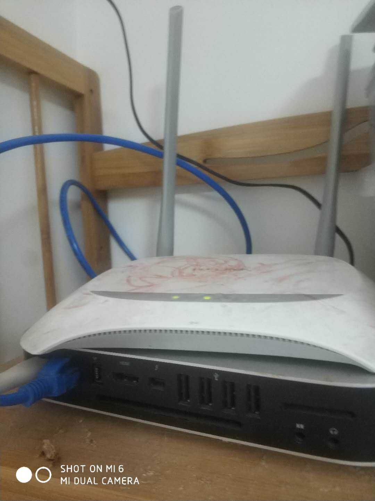

那个。。。2014年的mac mini ,不升级系统不让开发ios应用。升级后直接卡的要死，又不能降级，坑啊！
于是，我这两天给他装上了CentOS！嘿嘿。。。 然后。。。 无线网卡无法用，What?!! 配了好久没配成功
于是，弄了一个旧路由器做“桥接”，直接使用mac mini的有线接口，可以上网了。。
但！ 坑爹的360mini路由器，只能向外访问网络，局域网的机器不能访问这台机器，这还怎么做服务器？
所以，用了我的老的tp-link的路由器，还是tp-link给力！
弄好之后，给centos 装上 x-window gnome vnc-server,这样就不需要接显示器，可以直接用vnc管理了。
配好ssh,远程字符界面管理也搞定了。。
路由器自带DDNS，然后暴露出80端口，再然后，docker-compose一个Nginx+PHP-fpm+MySQL。终于搞定了
就让他作为服务器，一直跑着吧！

路由器上留下孩子的涂鸦。。。
考虑弄一个电表测一下他的功率。。看看平常费多少电。。。